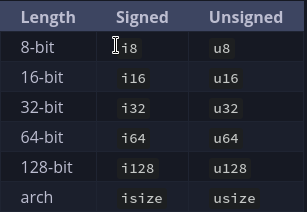

Rust
Local Documentation and Version Update
To access local documentation, use the following command:
rustup doc
To update to the latest version of Rust, use:
rustup update
To check the version of Rust running, use:
rustc --version
Macros
In Rust, a macro is a pre-defined sequence of automated input designed to streamline repetitive tasks. To call a macro, use the ! symbol. For example:
macro_name!(arguments);
Note that macros don't always follow the same rules as functions.
Cargo
Cargo is Rust's build system and package manager. Here are some key features and commands:
Creating a New Project
To create a new project, use:
cargo new folder_name
This command creates a new folder with a Cargo.toml file and a src folder containing a main.rs file. It also generates a new Git repository along with a .gitignore file.
Building and Running a Project
To build a project, use:
cargo build
To run a project, use:
cargo run
Alternatively, you can build and run a project in one step using:
cargo run
Checking for Errors
To check for errors without creating a binary, use:
cargo check
This command quickly checks the code to make sure it compiles but doesn't produce an executable.
Building for Release
To build a project for release, use:
cargo build --release
This command compiles the project with optimization and creates an executable in the target/release directory.
Syntax and Learning
Input/Output Library
To obtain user input and print output, you need to import the io library into scope using:
use std::io;
By default, Rust brings a set of items defined in the standard library into the scope of every program, known as the prelude.
Variables
In Rust, variables are declared using the let keyword and are immutable by default. To make a variable mutable, use the mut keyword. For example:
let apples = 5;
let mut bananas = 5;
Data Types
Rust is a statically typed language, which means it must know the data type of all variables at compile time. The language has four primary scalar types:
-
Integers

-
Floating-point numbers
-
Booleans
-
Characters
Basic Numeric Operations
Here's an example of basic numeric operations in Rust:
fn main() {
// addition
let sum = 5 + 10;
// subtraction
let difference = 95.5 - 4.3;
// multiplication
let product = 4 * 30;
// division
let quotient = 56.7 / 32.2;
let truncated = -5 / 3; // Results in -1
// remainder
let remainder = 43 % 5;
}
Compound Types
Rust has two compound types:
- Tuples
- Arrays
Tuples have a fixed length and can be declared using the following syntax:
let tup = (500, 6.4, 1);
Arrays have a fixed length and can be declared using the following syntax:
let a = [1, 2, 3, 4, 5];
Note that every element of an array must have the same type.
Variables and Mutability
In Rust, variables are immutable by default. To make a variable mutable, use the mut keyword. For example:
let mut x = 5;
To make a variable immutable forever, use the const keyword. For example:
const Y: u32 = 60;
Note that const and mut are different in that const makes a variable immutable forever, while mut makes a variable mutable.
Shadowing
Rust allows shadowing, which means you can declare a new variable with the same name as an existing variable. For example:
let x = 3;
let x = x + 1; // this overshadows the value of previous declaration